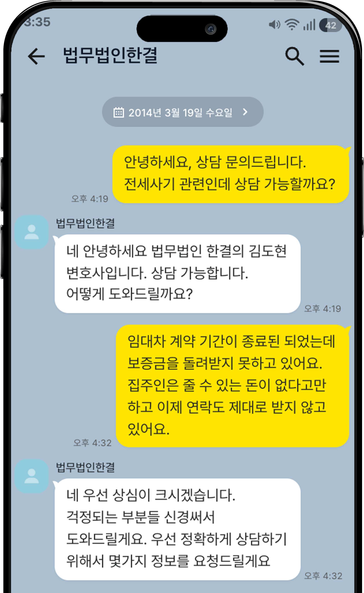

전세사기 대응
깡통전세, 이중계약, 대항력 상실 등 전세사기 유형별 맞춤 법적 대응 전략을 수립합니다.
보증금 반환 청구부터 형사 고소, 가압류, 경매 배당까지.
전세사기 피해 대응만 집중해온 법무법인 한결이 함께합니다.
임대인의 재산 은닉, 추가 담보 설정, 법인 변경 등 시간이 지날수록 채권 회수는 어려워집니다.
전세사기·보증금 분쟁만 집중 대응해온 경험과 노하우로, 실질적인 결과를 만들어냅니다.
보증금 미반환부터 형사 고소까지, 모든 상황에 맞는 법적 대응 전략을 제시합니다.
깡통전세, 이중계약, 대항력 상실 등 전세사기 유형별 맞춤 법적 대응 전략을 수립합니다.
임대차 계약 만료 후 보증금을 돌려받지 못한 경우, 내용증명부터 소송까지 진행합니다.
임대인의 사기 행위에 대한 형사 고소를 통해 협상력을 확보하고, 실질적 피해 회복을 도모합니다.
이사 후에도 대항력과 우선변제권을 유지할 수 있도록 임차권등기명령 신청을 대리합니다.
임차인 또는 점유자의 퇴거를 위한 명도 소송과 강제집행 절차를 지원합니다.
경매 절차에서 보증금 최대 회수를 위한 배당이의, 배당요구 등 채권 확보 절차를 진행합니다.
전세사기 피해는 타이밍과 회수 전략이 핵심입니다.
한결은 민사·형사·집행을 한 번에 설계해 결과로 연결합니다.
보증금 반환 청구와 형사 고소를 상황에 맞춰 병행해 협상력과 회수율을 높입니다.
등기/계약/행적을 빠르게 정리해 대응 순서를 만들고, 불리한 쟁점을 선제 차단합니다.
전화·카카오톡으로 사건 진행과 일정 변동을 바로 안내합니다. 의뢰인은 “다음 액션”을 항상 확인합니다.
가압류부터 배당 요구까지 회수 흐름을 설계해 “돈이 돌아오는 절차”를 끝까지 밀어붙입니다.

부동산·형사 동시 전문 자격을 보유한 변호사가 직접 사건을 담당합니다.
비슷한 상황이신가요? 실제 해결 사례를 확인해보세요.
가압류 → 소송 → 보증금 2억 원 전액 반환 성공(재산 은닉 정황 입증)
사기 혐의 입증 → 형사 합의금 + 민사 배상 확보(피해자별 대응 전략 수립)
우선변제권 입증 → 배당금 1억 5천만 원 확보(추가 배당 가능성까지 검토)
가압류 즉시 집행 → 소송 제기 → 보증금 전액 회수(추심 일정 단축)
고소장 접수 → 사실관계 입증 → 합의금 + 배상금 확보(재판부 설득 포인트 정리)
채권 신고 → 우선변제권 주장 → 배당금 추가 확보(회수 리스크 최소화)
실제 사건을 의뢰하신 분들의 생생한 후기입니다.
"전세사기 당한 후 막막했는데, 상담부터 너무 친절하게 설명해주셔서 안심이 됐어요. 가압류와 형사 고소를 동시에 진행해서 보증금 전액을 돌려받을 수 있었습니다."
"지방에 살아서 방문이 어려웠는데, 카카오톡으로 모든 진행 상황을 공유받았어요. 경매 배당까지 꼼꼼하게 챙겨주셔서 예상보다 많이 받았습니다. 정말 감사합니다."
"다른 곳에서 어렵다고 했던 사건인데, 한결에서 형사 고소를 통해 합의를 이끌어냈어요. 진행 과정마다 상세히 알려주셔서 불안하지 않았습니다."
"빌라왕 전세사기 피해자인데, 복잡한 상황을 한 번에 정리해주셨어요. HUG 보증 청구와 민사소송을 병행해서 최대한 빨리 해결됐습니다. 추천드려요!"
"초기 대응을 어떻게 시작해야 할지 막막했는데, 한결에서는 상황별로 가능한 선택지를 정리해주셔서 마음이 놓였습니다."
"임대인이 연락을 피해서 더 늦어질까 걱정했는데, 내용증명부터 가압류까지 바로 이어져서 큰 도움이 됐습니다."
"민사만으로는 어렵다고 느꼈는데, 형사 고소를 병행해 압박을 주셔서 합의로 마무리할 수 있었습니다."
"계약 만료가 얼마 남지 않아서 대항력에 대해 걱정이 많았는데, 임차권등기명령까지 꼼꼼히 진행해주셔서 안심했습니다."
전세사기 피해 상담 전, 궁금한 점을 먼저 확인해보세요.
상담은 무료이며, 상담만으로 의무가 발생하지 않습니다.
부담 없이 현재 상황을 말씀해 주세요.
정보를 남겨주시면 빠른 시간 내 연락드리겠습니다.